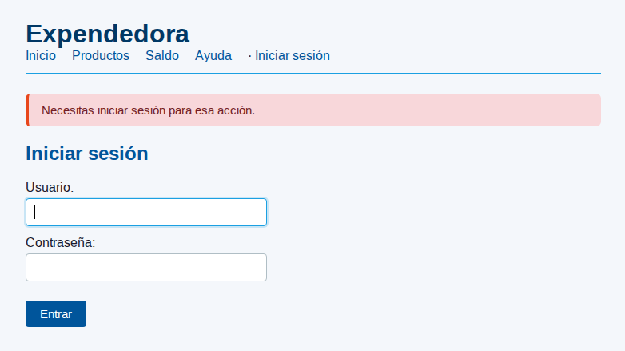
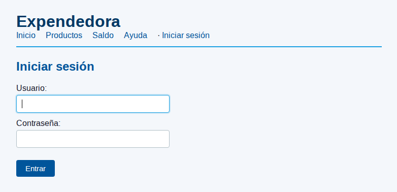
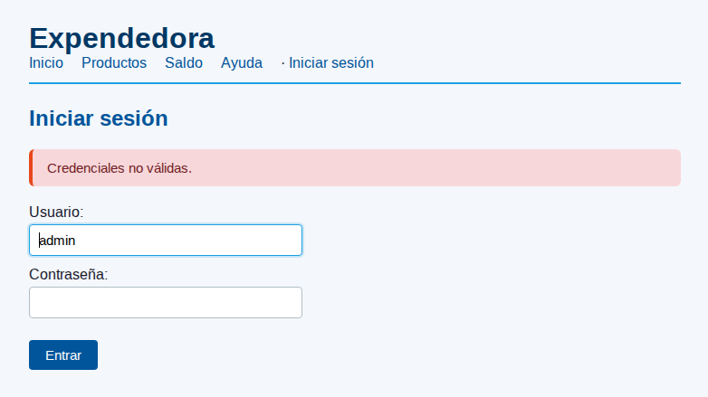
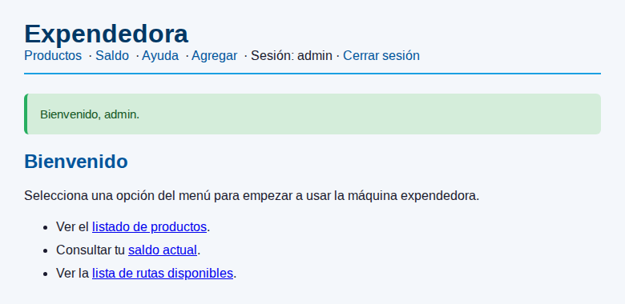
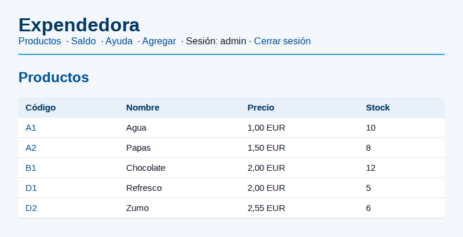
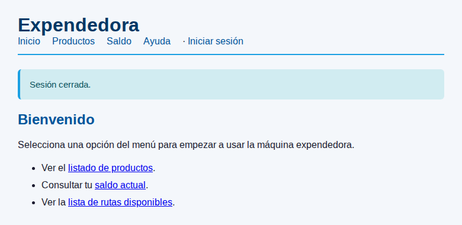

AUTENTICACIÓN Y AUTORIZACIÓN CON FLASK¶
Estas notas cubren los dos mecanismos que necesita una app web para distinguir visitantes y decidir qué puede hacer cada uno: la autenticación —comprobar que el usuario es quien dice ser— y la autorización —decidir si tiene permiso para una acción concreta—. Cierran la última pieza funcional que le falta a la app de la expendedora antes de la auditoría arquitectónica.
Conceptos previos trabajados:
- La sesión Flask: una cookie firmada por el servidor que viaja con cada petición del navegador. Hasta ahora la conocías por los mensajes flash de la Fase 6, que la usaban como canal efímero. En esta fase la usaremos también como memoria persistente entre peticiones, no solo de un uso, para recordar qué usuario está logueado.
- El patrón Post/Redirect/Get: las acciones que modifican estado responden con
redirect, no con HTML directo, para que recargar la URL final no reejecute la acción. Lo aplicaremos a/login(POST que verifica → redirect al destino) y a/logout(POST que limpia sesión → redirect a inicio). - Los decoradores de Python: funciones que envuelven otras funciones para añadir comportamiento alrededor. Hasta aquí los habías consumido (
@app.route,@app.errorhandler,@app.before_request); aquí escribirás uno propio.
Autenticación vs autorización¶
Qué significa cada cosa¶
Autenticación responde a la pregunta "¿quién eres?". El usuario presenta unas credenciales (típicamente nombre + contraseña) y el servidor comprueba si coinciden con lo que tiene guardado. Si coinciden, el servidor anota internamente que esa sesión pertenece a ese usuario. La autenticación pasa una sola vez al inicio.
Autorización responde a la pregunta "¿puedes hacer esto?". Cada vez que llega una petición a una ruta protegida, el servidor mira si el usuario tiene los permisos necesarios y decide si la deja pasar. La autorización pasa en cada petición.
| Concepto | Pregunta | Cuándo se evalúa | Implementación |
|---|---|---|---|
| Autenticación | ¿Quién eres? | Una vez, en /login |
Verificar credenciales contra la BD |
| Autorización | ¿Puedes hacer esto? | En cada petición protegida | Decorador que consulta la sesión |
Las dos cosas suelen confundirse porque el flujo típico encadena la una en la otra: te autenticas en /login, el sistema te identifica, y a partir de ahí cada ruta protegida te autoriza (o no) según quién eres. Pero son mecanismos independientes — puedes autenticarte sin que ninguna ruta esté protegida, y puedes proteger rutas sin distinguir usuarios (basta con "está logueado / no lo está").
Conviene tener los dos términos separados en la cabeza desde el principio. En la documentación técnica anglosajona los verás como AuthN (autenticación) y AuthZ (autorización). No es jerga vacía: ayuda a saber dónde mirar cuando algo falla — si el problema es que no puede entrar al login, es authN; si el problema es que tras loguearse no puede agregar productos, es authZ.
Hash de contraseñas¶
Las contraseñas no se guardan nunca en claro en la base de datos. Se guarda un hash: una huella unidireccional de la contraseña. Verificar consiste en volver a hashear lo que teclea el usuario y comparar los dos hashes.
Flask incluye werkzeug.security con dos funciones que cubren todo lo que necesitas — sin dependencias extra y sin tener que inventar nada por tu cuenta:
Usa siempre estas dos funciones
generate_password_hash aplica salt aleatorio y un algoritmo de hashing costoso por diseño; check_password_hash hace la verificación de forma segura. No uses hash() de Python (que está pensado para diccionarios, no para criptografía) ni compares hashes con ==. Toda la lógica criptográfica vive dentro de estas dos funciones — limítate a llamarlas.
Repositorio de usuarios paralelo¶
Por qué un repositorio nuevo y no extender el existente¶
Los usuarios son persistencia —hay que guardarlos en algún sitio, comprobarlos contra la BD— pero no son dominio. La expendedora no sabe quién es su operario, igual que un microondas no sabe quién cocina. Solo la interfaz —la capa de presentación que decide a quién deja interactuar— necesita conocer la identidad del usuario.
Eso lleva a una decisión arquitectónica concreta:
- Los usuarios viven en
infrastructure/como cualquier otro recurso persistente. - Se modelan con un repositorio nuevo,
infrastructure/repositorio_usuarios_sqlite.py, paralelo alrepositorio_sqlite.pyque ya gestiona los productos. La BDexpendedora.dbes la misma; dentro tiene ahora una tablausuariosademás de las de productos. - No se añaden métodos al
ServicioExpendedorapara auth. No hayservicio.hacer_login(...), niservicio.verificar_usuario(...). El servicio sigue siendo el servicio de venta. - La capa de presentación habla directamente con el repositorio de usuarios para verificar credenciales en el
/login. No pasa por el servicio.
Esta es exactamente la flexibilidad que la arquitectura por capas promete: añadir una preocupación nueva sin reabrir el código del dominio.
| Capa | Estado tras la fase 7 |
|---|---|
domain/ |
Intacto. No sabe que existe la auth. |
application/ |
Intacto. El servicio de venta sigue siendo el de venta. |
infrastructure/ |
Crece: aparece repositorio_usuarios_sqlite.py paralelo al de productos. La tabla usuarios se siembra en crear_bd.py. |
presentation/ |
Crece: rutas /login y /logout, decorador @login_required, plantilla login.html, nav condicional en base.html. |
Diseño del repositorio¶
El repositorio de usuarios sigue exactamente el mismo patrón que el de productos: una clase con constructor que recibe la ruta de la BD, métodos que abren conexión, ejecutan SQL y la cierran.
La interfaz se limita a lo que el login necesita: buscar_por_nombre devuelve la tupla del usuario (o None si no existe), existe es un helper trivial sobre el anterior. No hay crear_usuario, ni cambiar_password, ni listar_usuarios — el alta se hace por el script crear_bd.py y no hay caso de uso "gestión de usuarios desde la web" en esta fase. Cuando aparezca, se añaden los métodos.
El servicio de venta y el repositorio de usuarios no se conocen entre sí. Cuando un alumno intenta inyectar el repositorio de usuarios dentro de
ServicioExpendedoraestá confundiendo capas: la auth no es un caso de uso del dominio expendedora, es una preocupación de la capa de presentación. El indicador definitivo es que la otra interfaz —menu.py, la consola— sigue funcionando sin login, y usa el mismo servicio.
Esquema de la tabla¶
Cinco columnas: identificador autoincremental, nombre único, hash de contraseña, rol y bandera de activo. Las dos últimas son datos no usados en esta fase: no se usan en el login, pero dejan el esquema preparado por si más adelante queremos distinguir tipos de usuario (admin / cliente) o deshabilitar una cuenta sin borrarla. SQLite no tiene tipo booleano nativo, así que activo es un INTEGER con valor 1 (activo) o 0 (deshabilitado).
Schema preparado para extensiones razonables
Añadir rol y activo desde el principio cuesta dos líneas y evita una migración de esquema más adelante. No añadas todo lo que se te ocurra (fecha_creacion, ultimo_login, email, telefono…): si no lo va a usar la siguiente fase, no lo metas. La regla es "lo mínimo más una extensión razonable", no "todo por si acaso".
La sesión Flask como memoria entre peticiones¶
session vs flash¶
Ya conoces flash de la Fase 6: un mensaje que un route deja para que otro lo lea una sola vez tras un redirect. La sesión Flask es el mecanismo subyacente: una cookie firmada que viaja con cada petición. flash es solo un caso de uso particular de la sesión — guardar mensajes efímeros que se vacían al leerlos.
La sesión sirve también para guardar datos persistentes entre peticiones del mismo navegador, no de un solo uso:
| Mecanismo | Persistencia | Caso típico |
|---|---|---|
flash |
De un uso (se vacía al leer) | Feedback tras un POST con redirect |
session['clave'] |
Hasta que se borre o la cookie expire | Recordar que el usuario está logueado |
Las dos comparten infraestructura: la misma cookie firmada con app.secret_key. Si declaraste app.secret_key para los flashes en a6, no hay nada nuevo que configurar para la sesión en a7.
Guardar y leer datos en la sesión¶
session se comporta como un diccionario normal en Python, con dos diferencias: persiste entre peticiones del mismo navegador y se serializa a cookie en cada respuesta. En la sesión guarda solo el identificador del usuario logueado (session['user'] = 'admin'), nunca datos sensibles como contraseñas o tokens — el contenido de la cookie no está cifrado.
session en las plantillas Jinja¶
Flask expone automáticamente session como variable en todas las plantillas. No hace falta pasarla desde el route con render_template(..., session=session):
En Python normal, session['user'] lanzaría KeyError si la clave no existe. En Jinja no: si la clave no está, devuelve un valor especial Undefined que se evalúa como falso en un {% if %} y no lanza excepción. Por eso se puede escribir {% if session['user'] %} directamente, sin protegerse antes con {% if 'user' in session %}.
El decorador @login_required¶
Decoradores Python — repaso rápido¶
Un decorador es una función que recibe otra función y devuelve una función nueva que la envuelve. Lo que está dentro del envoltorio es código que se ejecuta alrededor de la función original — antes, después, o en lugar de ella, según convenga.
La línea @mi_decorador encima de def saludar(...) es la forma corta de escribir saludar = mi_decorador(saludar). Después de esa línea, saludar ya no es la función original — es el envoltorio devuelto por mi_decorador.
Los
*argsy**kwargsdel envoltorio son una sintaxis comodín:*argsrecoge cualquier número de argumentos posicionales en una tupla,**kwargsrecoge cualquier número de argumentos por nombre en un diccionario. Reenviarlos afconf(*args, **kwargs)permite que el mismo envoltorio sirva para funciones con firmas distintas:saludar(nombre),comprar(),eliminar(codigo), todas se decoran igual.
Anatomía de @login_required¶
Lectura paso a paso:
login_requiredrecibe la funciónf(la vista que queremos proteger).- Devuelve
envoltorio, una función nueva con la firma(*args, **kwargs)para aceptar cualquier ruta. - Cuando llega una petición a una ruta decorada, Flask llama a
envoltorio, no af. envoltoriomira si hay'user'en la sesión.- Si no lo hay: flash de aviso + redirect a
/login, pasando la ruta original como parámetrosiguientepara volver tras el login. - Si lo hay: llama a
f(*args, **kwargs)y devuelve su resultado tal cual.
El parámetro siguiente es opcional pero mejora mucho la usabilidad: si el usuario intentaba ir a /agregar y le redirigimos al login, tras autenticarse vuelve a /agregar automáticamente en lugar de aterrizar en la raíz.
La segunda mitad del mecanismo se procesa en la rama POST de la ruta /login: tras verificar las credenciales, lee request.args.get('siguiente') y redirige a esa URL si la encuentra; en caso contrario, a inicio. El parámetro viaja por la URL, no por el cuerpo del formulario — el <form> de login.html no lleva action, así envía a la URL actual conservando el querystring.
El papel de @wraps¶
Cuando defines un decorador, lo que devuelve es otra función distinta —en nuestro caso, la función interna envoltorio—. Esa función nueva no hereda automáticamente el nombre de la original: hay que pedirlo explícitamente con @wraps, que veremos en seguida.
Mira qué pasa sin @wraps:
Con @wraps:
@wraps(f) copia el nombre y los metadatos de f al envoltorio, de forma que desde fuera agregar sigue pareciendo agregar. Flask identifica cada vista por su __name__: sin @wraps, todas las vistas decoradas se llamarían envoltorio, colisionarían entre sí en el url_map, y url_for('agregar') daría BuildError. Cada decorador casero lleva @wraps. Sin excepciones.
Orden de los decoradores¶
Cómo se aplican¶
Cuando una función lleva varios decoradores apilados, Python los aplica de abajo arriba: primero el decorador más cercano a def, luego el siguiente, así hasta el de arriba del todo. El último que se aplica es el que queda visible "por fuera".
Esto importa porque @app.route no es un decorador como los demás: no envuelve la función, la registra en el url_map de Flask y devuelve la función tal cual le llegó. Por eso @app.route lo que registra es lo que tiene debajo en ese momento — sea la función pelada o un envoltorio ya creado por otro decorador.
El orden correcto con @login_required¶
Lectura de abajo arriba:
- Primero se aplica
@login_required: envuelveagregary devuelveenvoltorio. - Después se aplica
@app.route('/agregar', ...): registraenvoltorioen elurl_mapcomo vista de/agregar.
Cuando llega una petición a /agregar, Flask llama a envoltorio, que mira la sesión y decide si dejar pasar.
Mala práctica: @login_required encima de @app.route
## Incorrecto: Flask registra la vista sin proteger; la ruta queda accesible
@login_required
@app.route('/agregar')
def agregar(): ...
La regla es: @app.route siempre el más externo (arriba), cualquier decorador propio debajo. Con el orden inverso la protección no falla con un error visible — simplemente no se aplica, y la ruta queda abierta sin que nada lo indique.
Autorización por rol funcional¶
Qué proteger y qué no¶
Decidir qué rutas llevan @login_required no es una decisión técnica sobre HTTP — es una decisión de dominio. La pregunta no es "¿esta ruta es GET o POST?" ni "¿lee o escribe?", sino "¿quién tiene legítimamente que usar esta ruta?".
En el caso de la expendedora la división es clara:
- El cliente se acerca a la máquina, mete monedas, elige un producto y se va. Esa interacción tiene que poder hacerse sin identificación: si exigieras login para insertar dinero o comprar, la máquina dejaría de ser una expendedora y se convertiría en una tienda online — un producto distinto, con casos de uso distintos.
- El operario mantiene la máquina: añade productos nuevos al catálogo, elimina los descatalogados, repone stock cuando se acaba. Esas acciones sí requieren identidad: solo la persona autorizada puede modificar el catálogo.
| Tipo de actor | Rutas | Protección |
|---|---|---|
| Cliente | /, /productos, /producto/<codigo>, /buscar/<texto>, /saldo, /insertar, /seleccionar, /comprar, /cancelar, /api/productos, /api/producto/<codigo> |
Libres |
| Operario | /agregar, /eliminar/<codigo>, /reponer/<codigo>/<int:unidades> |
@login_required |
Fíjate en que tanto /comprar (cliente) como /agregar (operario) son POSTs que modifican estado del servidor. Si la decisión se tomara por verbo HTTP, las dos llevarían el decorador. Pero /comprar la usa el cliente legítimamente sin identificarse, y /agregar no. El criterio es siempre el rol del actor, no la naturaleza técnica de la petición.
Mala práctica: proteger por verbo HTTP en lugar de por rol funcional
## Incorrecto: bloquea /comprar (legítima sin login) y deja libre /api/admin/eliminar (no debería)
@app.route('/comprar', methods=['POST'])
@login_required
def comprar(): ...
## Correcto: protege según quién es el actor legítimo, no según el verbo
@app.route('/comprar', methods=['POST'])
def comprar(): ...
@app.route('/agregar', methods=['POST'])
@login_required
def agregar(): ...
La pregunta de diseño es siempre "¿quién es el actor legítimo de esta acción?". Si la respuesta es "cualquiera", la ruta es libre. Si la respuesta es "alguien identificable", la ruta lleva @login_required (y, si se da el caso, un decorador adicional que distinga roles).
Roles más finos¶
Distinguir solo "logueado / no logueado" es el caso más sencillo. Si necesitas más granularidad —admins que pueden hacer todo, clientes premium que pueden hacer solo algunas cosas— se modela con un campo rol en la tabla de usuarios y decoradores adicionales del tipo @admin_required que comprueban no solo si hay sesión sino también qué rol tiene el usuario en ella.
El esquema de la tabla usuarios que viste arriba ya incluye rol precisamente para no tener que migrar más adelante. En esta fase no usamos ese campo, pero el dato está ahí.
El flujo completo¶
Login¶
- El usuario sin sesión hace
GET /agregar. -
@login_requireddetecta que no hay'user'ensession, deja un flash de aviso y devuelveredirect('/login?siguiente=/agregar'). El navegador sigue el redirect y el alumno aterriza en el formulario de login con el flash de aviso encima:
-
El navegador sigue el redirect a
GET /login?siguiente=/agregar. El routelogin(en su rama GET) renderizalogin.html.
-
El usuario teclea sus credenciales y envía el formulario:
POST /login?siguiente=/agregarcon los campos enrequest.form. -
El route
login(rama POST) busca el usuario en el repositorio, verifica el hash concheck_password_hash, y si todo cuadra guardasession['user'] = nombre. Si no cuadra, vuelve alogin.htmlcon un mensaje de error genérico y código 401:
-
Devuelve
redirect('/agregar')(la URL guardada ensiguiente). -
El navegador hace
GET /agregar, ahora con sesión válida.@login_requireddeja pasar.
Logout¶
-
El usuario logueado pulsa el botón "Cerrar sesión" en la nav (un
<form method="POST" action="/logout">).
-
POST /logoutejecutasession.pop('user', None)para eliminar la clave. - Devuelve
redirect('/')con un flash de despedida. -
El navegador hace
GET /, ahora sin sesión. La nav vuelve a mostrar "Iniciar sesión" en lugar del nombre del usuario.
Mala práctica: logout con GET
<!-- Correcto -->
<form method="POST" action="/logout" style="display:inline">
<button type="submit">Cerrar sesión</button>
</form>
Cerrar sesión cambia el estado del servidor, así que va por POST igual que cualquier otra acción de escritura. En aplicaciones reales verás /logout con GET con frecuencia — es una concesión a la usabilidad, no un patrón técnicamente correcto.
Acceso a una ruta protegida con sesión¶
Cuando ya hay sesión, el flujo de @login_required es invisible para el usuario: cada petición a una ruta protegida pasa por el decorador, que comprueba la sesión y deja o impide acceder a la vista original.
Resumen del patrón completo¶
| Pieza | Dónde vive | Qué hace |
|---|---|---|
Tabla usuarios(id, nombre, password_hash, rol, activo) |
BD (crear_bd.py) |
Persistencia de credenciales. |
generate_password_hash(password) |
crear_bd.py (semilla) y futuros altas |
Convierte la contraseña en un hash unidireccional con salt aleatorio. |
check_password_hash(hash, password) |
Route /login |
Verifica que una contraseña candidata coincide con el hash guardado. |
RepositorioUsuariosSQLite |
infrastructure/repositorio_usuarios_sqlite.py |
Acceso a la tabla usuarios (buscar_por_nombre, existe). Paralelo al de productos, no integrado en el servicio. |
session['user'] |
Cookie firmada del navegador | Identificador del usuario logueado. Persiste entre peticiones del mismo navegador. |
session.pop('user', None) |
Route /logout |
Elimina la clave de la sesión. Idempotente. |
Route /login con GET/POST |
app.py |
GET muestra el formulario; POST verifica credenciales, guarda session['user'] y redirige a siguiente o inicio. |
Route /logout con solo POST |
app.py |
Limpia la sesión y redirige. Botón en base.html, no enlace. |
@login_required con @wraps |
app.py |
Decorador casero que mira session y redirige a /login si no hay sesión. Aplicado solo a rutas de mantenimiento. |
@app.route encima, @login_required debajo |
Cada vista protegida | Orden obligatorio. El inverso deja la vista sin proteger en silencio. |
Nav condicional {% if session['user'] %} |
base.html |
Muestra enlaces de operario solo cuando hay sesión; toggle de login/logout. |
Qué cierra esta fase¶
Con la autenticación queda cerrado el último cambio funcional de la app web: ahora los visitantes anónimos pueden usar la expendedora con normalidad, y solo los operarios autenticados pueden modificar el catálogo. El cambio se ha hecho sin tocar el dominio ni el servicio, añadiendo solo un fichero en infraestructura y un par de rutas más un decorador en presentación. El menú de consola sigue funcionando exactamente igual que antes, ignorando por completo que existe la auth — que es justo lo que la arquitectura por capas permite.